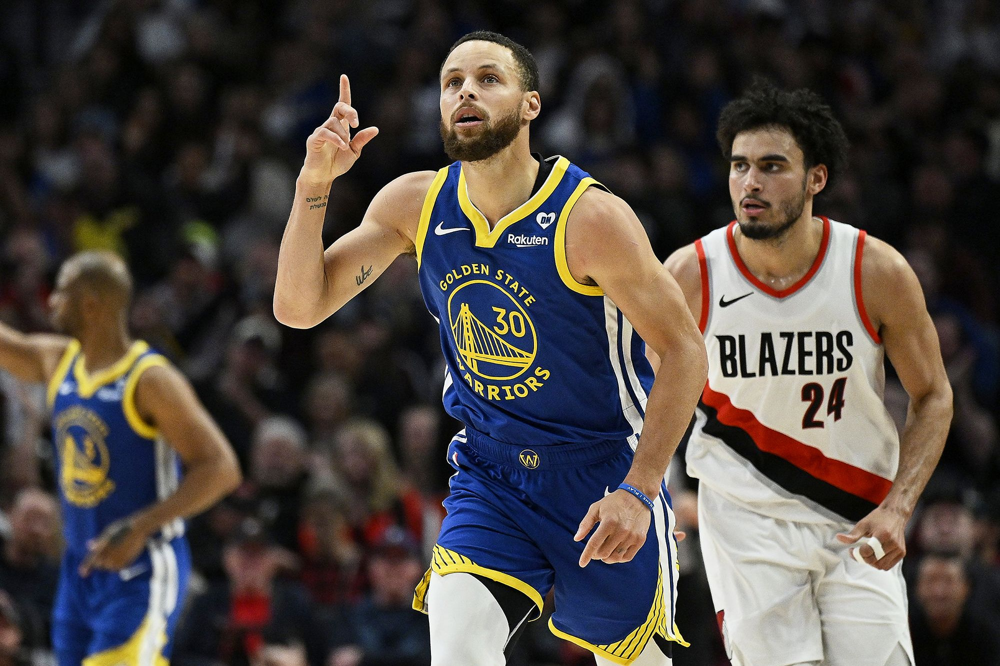
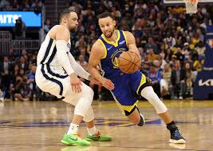
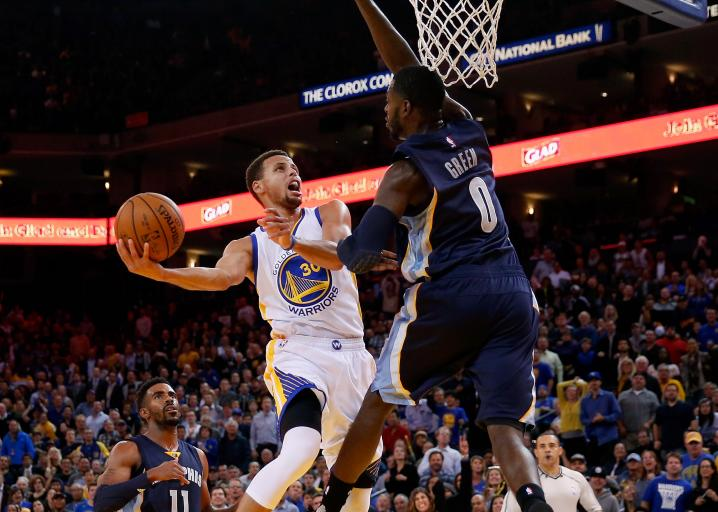
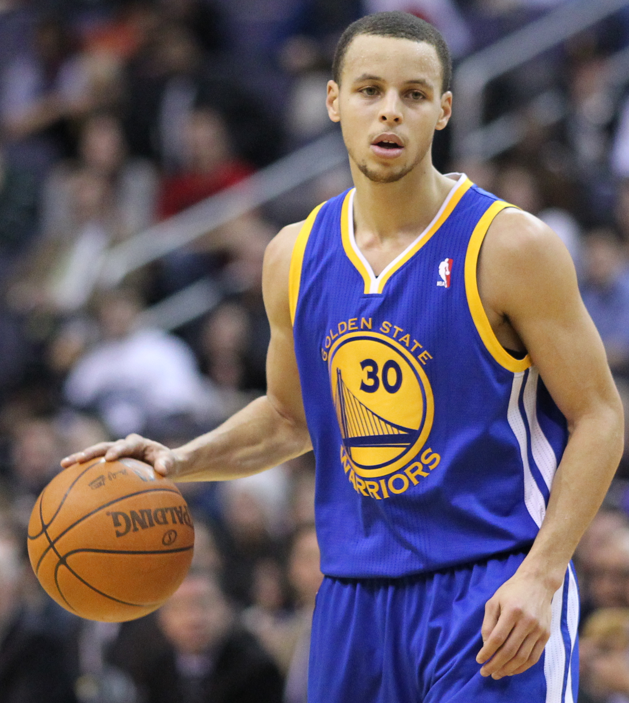

News
Recaps
Film Room
Roster
Opinion

Signal and sprint back.
Hardware held high.

Downhill with pace.
Call the action.

Early days in blue and gold.

Title moments last.
Core chemistry, constant.
Motion, distilled.
Heart to the crowd.